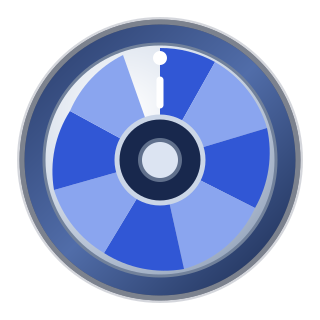
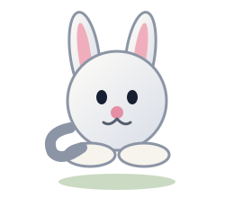

Hauptaufgabe
Drehende Scheibe

Tastatur: Mit L und R wechselst du jeweils ein Bild. Mit A startest oder stoppst du die automatische Rotation.
Erweiterung 1
Animiertes Objekt

Der Hase besteht ebenfalls aus mehreren Einzelbildern. JavaScript tauscht die Bilder nacheinander aus und erzeugt dadurch den Eindruck einer Bewegung.
Dokumentation
Quellen & Hinweise
Material
Die Scheiben- und Hasenbilder wurden für diese Web-Anwendung als eigene SVG-Grafiken erstellt. Es wurden keine externen Bildquellen benötigt.
Technik
HTML, CSS und JavaScript. Die Animation verwendet normale
<img>-Elemente. Es wird kein HTML-Canvas und kein WebGL verwendet.
Bedienung
L/R verändern den Rotationsschritt. A startet bzw. stoppt die kontinuierliche Animation. Die Buttons können alternativ mit der Maus bedient werden.
Testumgebung
Die Anwendung ist für aktuelle Desktop-Browser ausgelegt und kann lokal über einen Webserver oder auf einem öffentlichen Webserver getestet werden.
Test- und QA-Hinweise
- Bei L wird genau ein Rotationsbild zurückgeschaltet.
- Bei R wird genau ein Rotationsbild weitergeschaltet.
- Bei A startet bzw. stoppt die automatische Rotation.
- Die Animation läuft nicht mehrfach parallel, wenn A wiederholt gedrückt wird.
- Die Browser-Konsole sollte keine JavaScript-Fehler anzeigen.